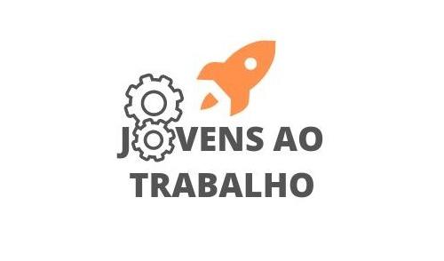

Pojeto do Ano
Sobre o projeto
A temática que gerou nosso projeto foi "Jovens no Mercado de Trabalho". A partir desse tema, nós trabalhamos especificamente sobre as dificuldades e vulnerabilidades que os jovens encontram quando se trata de escolher uma profissão, faculdade ou qual área profissional seguir. Além disso, falamos de como a pressão familiar e escolar pode prejudicar os jovens a fazerem uma escolha. Abaixo nós temos a logo do projeto:
Desenvolvimento
Após muitas pesquisas, conversas e coleta de dados, nós resolvemos criar uma pagina no instagram para fazer postagens relacionadas às profissões e publicações das entrevistas com profissionais especializados no assunto. As postagens no Instagram possuem um padrão, que é: falar sobre alguma profissão. Nós selecionamos uma profissão, falamos sobre quais os requisitos mínimos para seguir essa profissão e colocamos curiosidades.
Nós utilizamos o instagram para fazer as postagens, pois era uma maneira efetiva de atingir nosso publico alvo, os adolescentes.
Depois de todo o estudo, pesquisa, criação da pagina do instagram e postagens, nós
concluimos o projeto. Para acessar nossa pagina no intagram acesse esse link: JovensAoTrabalho ou scaneie o Código qr abaixo:
Conclusão
←Voltar ao Portfolio